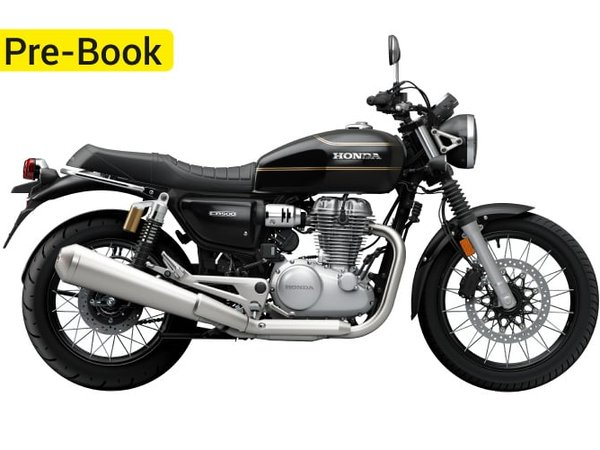

Honda CB500 / GB500: la retro monocilíndrica de 501 cc que viene a Europa
Presentada en India y lanzada allí en septiembre de 2026 desde 275.000 rupias, la CB500 es la hermana mayor de la GB350S: monocilíndrica de 501 cc refrigerada por aire y aceite, 28 CV, 43,3 Nm y menos de 200 kg. En Europa se espera como GB500S para 2027.